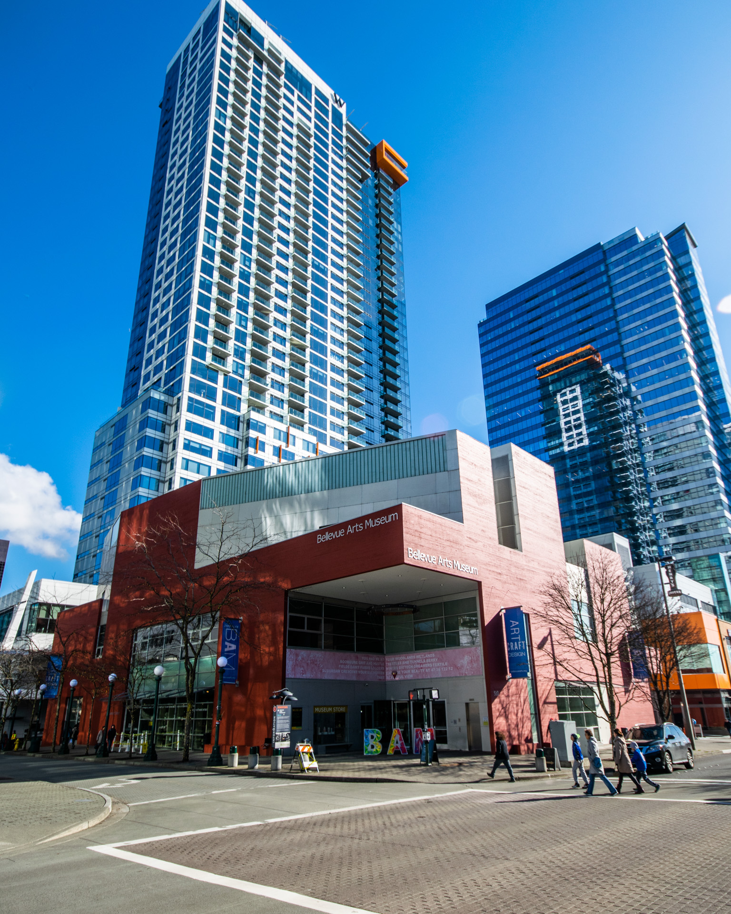
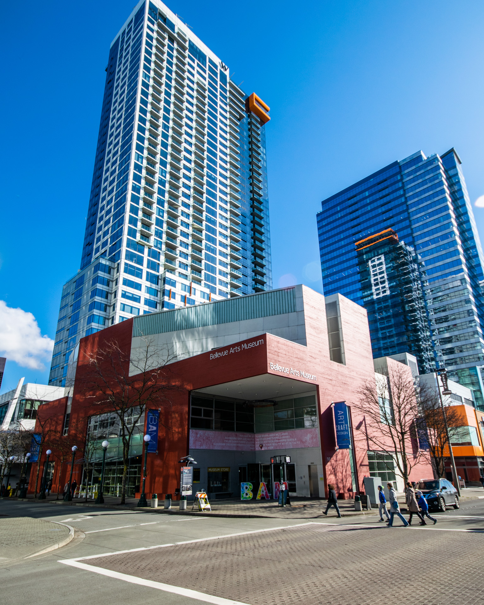

EMILIE V. SMITH
425.381.0037 | emilie.v.smi@gmail.com
Work Samples for Seattle Opera Web Producer and Designer application
Web Design
Below are a few examples of websites and pages that demonstrate my proficiency with HTML, CSS, and JavaScript:
- bellevuearts.org, which I maintain for Bellevue Arts Museum on the Umbraco CMS platform. The website was built by Garrigan Lyman Group in 2016 and I have served as the primary editor since its launch.
- A recent monthly newsletter from ___. All of BAM's email campaigns are hard-coded in Adobe Dreamweaver.
- ev-smith.github.io/portfolio is an example of a website I built without the use of any frameworks for my certificate degree program at the UW in 2016. While it could use a content update, it is still a good example of my coding skills and demonstrates some of my work with JavaScript—notably in the video controls and the hover functionality of the photography landing page. There you will also find examples of my personal photography and a handful of videos not included on this page.
- This webpage is an example of some quick work using Bootstrap framework.
Graphic Design
These design samples show a mix of independent and collaborative work. Much of the graphic design I undertake at the Museum involves using original print creative from our Graphic Designer and remixing the elements to work in email, web, or social. Campaigns without a print element, like Preview Parties, and certain Development campaigns, are completed independently. The first two samples below are examples of independent work, and the last three are collaborative.


Video work
These videos demonstrate my history of digital asset production for a range of uses, including advertising, social media, and donor cultivation.
TV Spot - Example 1 | Playa Made: The Jewelry of Burning Man for KCTS 9
This spot features third party photography that I manipulated in Photoshop to create additional negative space—allowing me to fully fill the screen with imagery and avoid a split screen for the text. The spot was created in Adobe Premiere Pro and the vocals were provided by KCTS 9.
TV Spot - Example 2 | Maria Phillips: Hidden in Plain Sight for KCTS 9
This spot features three of my photographs (1 lightbox photo and 2 installation photos) alongside a video provided by the artist. The spot was also created in Adobe Premiere Pro employing a similar "Ken Burns effect" to the first video. Also with vocals provided by KCTS 9.
Timelapse - Example 1 | Light study of Morgan Madison's Somnodrome
I love a timelapse! Especially an infinite loop. This example captures 24 hours of light moving across a recent glass biennial sculpture on the Museum's Court of Light.
Timelapse - Example 2 | Jeffrey Stenbom, Every Year Installation
Another example of content created for the Museum's social media channels capturing the installation of Jeffrey Stenbom's extremely moving work on veteran suicides, Every Year.
Performance art documentation | Demonstration of Labor Camp's, THEM
This video documents the performance art aspect of Labor Camp's, THEM (significantly sped-up from the real-life half hour duration). The video is currently on view in the Museum Forum alongside the label for the physical work.
Donor cultivation video | Artful Evening Gala Auction, 2017
While I haven't had the capacity to create long-form videos since the Museum's marketing team was reduced by one full time position a couple of years ago, I have had the pleasure of creating a number of feature videos for the Museum's annual auction, including this one from 2017.
Photo editing
Bellow are a couple of examples of before and after photo edits. Drag the slider to compare the edited images versus the straight-out-of-camera files.
Example 1
I loved this photo of the install crew driving a hot rod into the Museum Forum, but did not love that Dylan Neuwirth's Source Code was unplugged at the time. I used existing photos I had taken of the work to go ahead and turn it on via Photoshop (making sure not to neglect the reflection on the floor!).
Example 2
Getting the gallery guides and artwork in focus at the same time in this composition just wasn't going to happen with the amount of available light. My coworker/hand-model and I were also struggling to get the elements lined up exactly right. To fix both issues, I took a separate photo focused on the work and stitched the two images together.
Photography highlights


 
